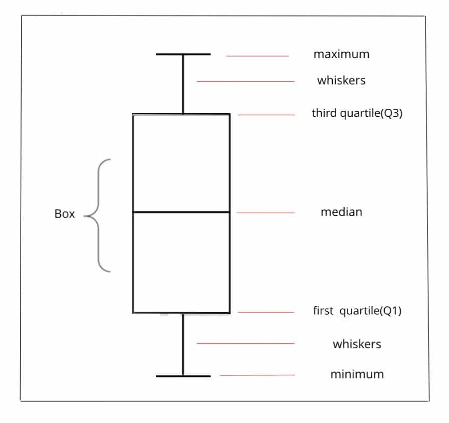
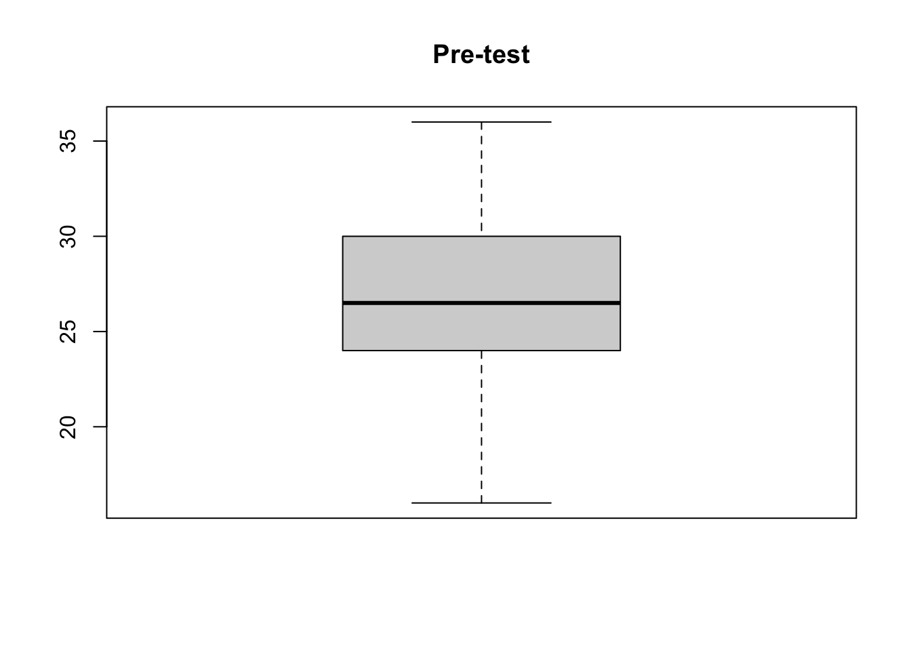
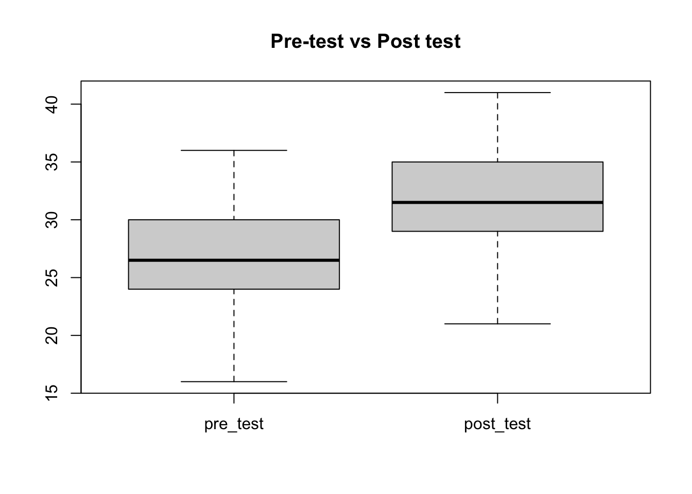
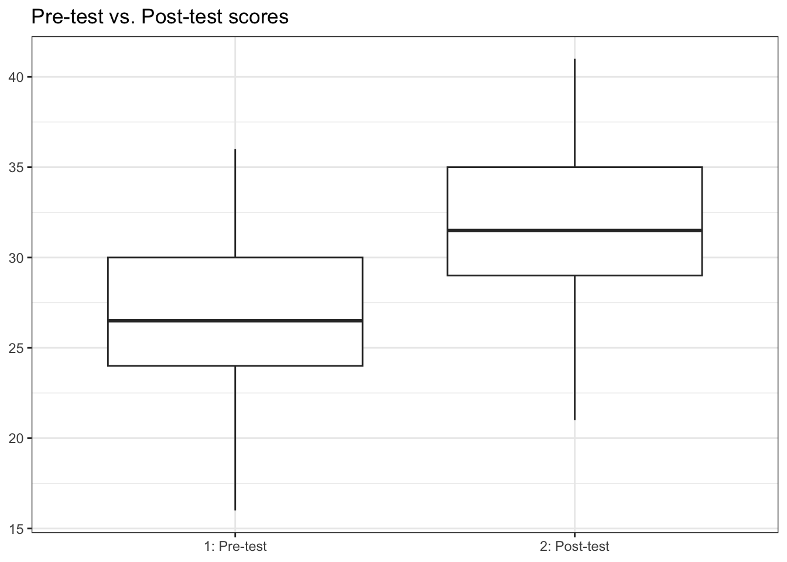
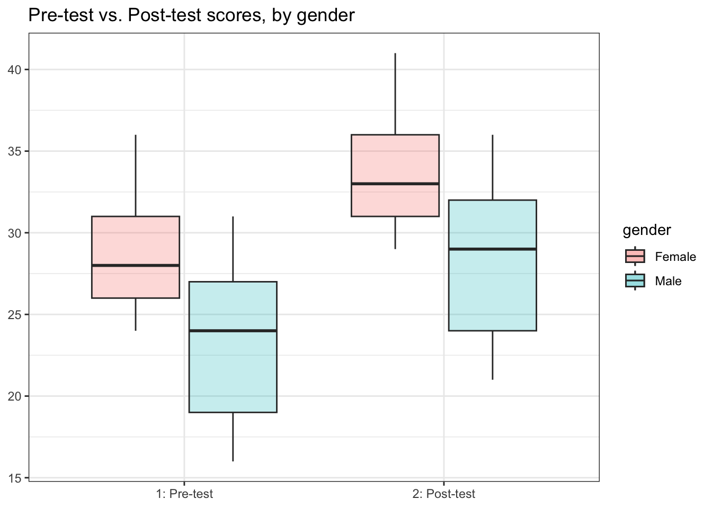

Box-plot is one of the effective ways to visually represent the distribution of data and it gives you an overall idea about how the data looks. Also, it is one of the best tools to identify the outliers to check if an association you find in your analysis can be explained by the presence of potential unusual observations.
The graph shown below is an example of box-plot where the box shows the interquartile range (IQR), the horizontal line inside the box presents the median (50th percentile), and the whiskers (lines extending from the box) represent maximum value that is not an outlier (1.5 IQR above the third quartile) and minimum value that is not an outlier (1.5 IQR below the first quartile). All individual points outside the whiskers are considered as outliers.

Box-plots are usually a useful way to compare the distribution of data among two or more groups, or to compare the distribution of data among one or more than one group across time.
Let’s use the below data as an example. The first column shows the gender of each observation, the values in the second column are pre-test scores and the values in the third column are post-test scores.
df <- data.frame(
gender = c("Male", "Male", "Male", "Male", "Male", "Male", "Male", "Male", "Male", "Female", "Female", "Female", "Female", "Female", "Female", "Female", "Female", "Female", "Female", "Female"),
pre_test = c(30, 26, 24, 19, 27, 21, 31, 16, 16, 26, 28, 29, 36, 25, 27, 24, 32, 30, 33, 26),
post_test = c(35, 31, 29, 24, 32, 26, 36, 21, 21, 31, 33, 34, 41, 30, 32, 29, 37, 35, 38, 31)
)
df## gender pre_test post_test
## 1 Male 30 35
## 2 Male 26 31
## 3 Male 24 29
## 4 Male 19 24
## 5 Male 27 32
## 6 Male 21 26
## 7 Male 31 36
## 8 Male 16 21
## 9 Male 16 21
## 10 Female 26 31
## 11 Female 28 33
## 12 Female 29 34
## 13 Female 36 41
## 14 Female 25 30
## 15 Female 27 32
## 16 Female 24 29
## 17 Female 32 37
## 18 Female 30 35
## 19 Female 33 38
## 20 Female 26 31The base R function to build a boxplot is
boxplot().

Let’s combine both plots for better comparison.

I prefer the ggplot2 plots because the output is nicer and importantly it can be easily modified compared to base R graphs, moreover, it is more popular among R users.
The geom_box() function from the
ggplot2 package can be used to create a
box-plot.
# install.packages("ggplot2")
library(ggplot2)
ggplot(df) +
geom_boxplot(aes(y = pre_test, x = "1: Pre-test")) +
geom_boxplot(aes(y = post_test, x = "2: Post-test")) +
theme_bw() +
labs(title = "Pre-test vs. Post-test scores", x = NULL, y = NULL)
The plot on the left side shows the distribution of pre-test scores and the one on the right side shows the distribution of post-test scores. The above plot shows that average post-test score (31.5) is higher compare to the pre-test (26.5).
It is also possible to use box-plot to visualize the distribution of data by categories of another variable as well, see below example for instance.
ggplot(df) +
geom_boxplot(aes(y = pre_test, x = "1: Pre-test", fill = gender), alpha = 0.25) +
geom_boxplot(aes(y = post_test, x = "2: Post-test", fill = gender), alpha = 0.25) +
theme_bw() +
labs(title = "Pre-test vs. Post-test scores, by gender", x = NULL, y = NULL)
The above plot shows that on average females have higher score (boxes in red color) compare to those of males (boxes in blue color) in both pre-test and post-test.